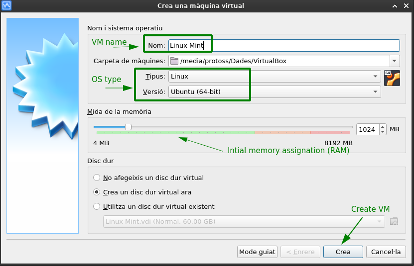
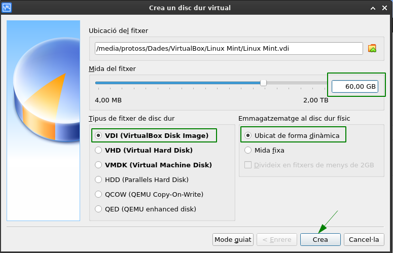
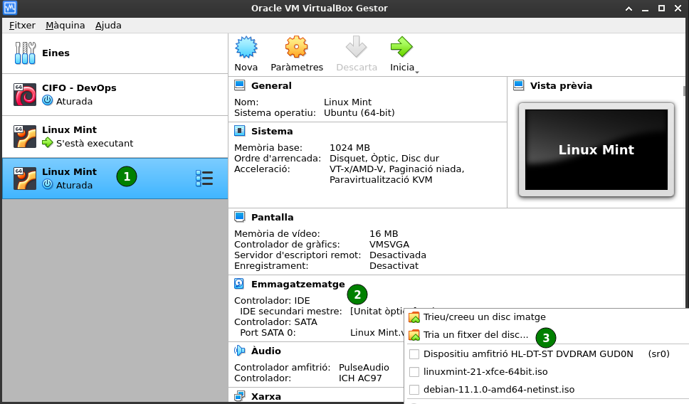
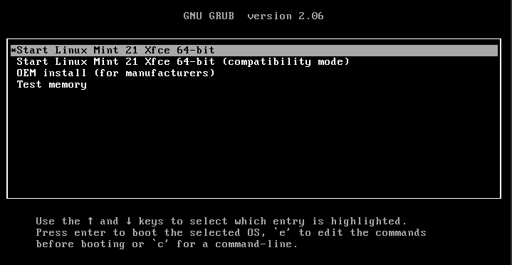
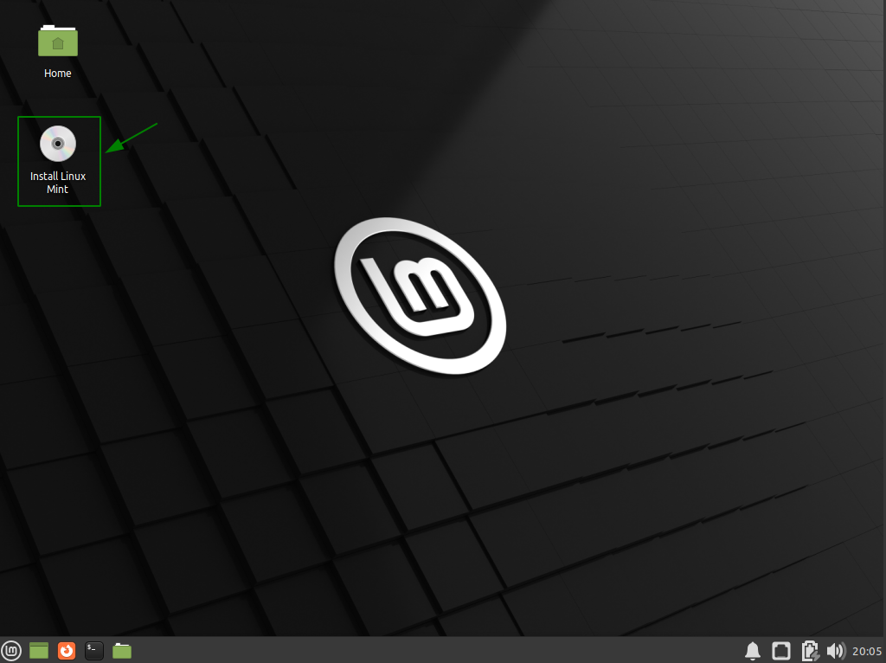
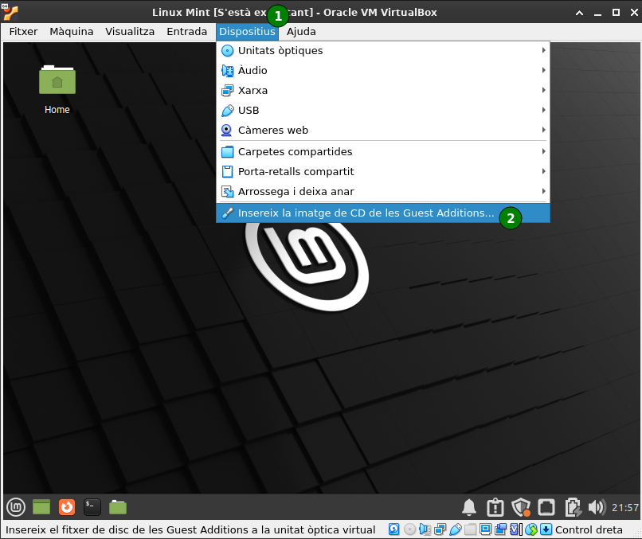
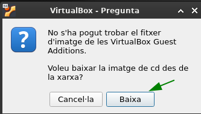
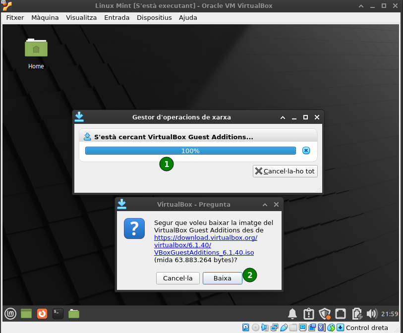
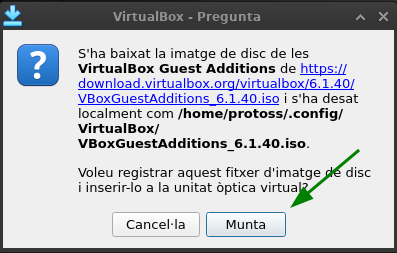
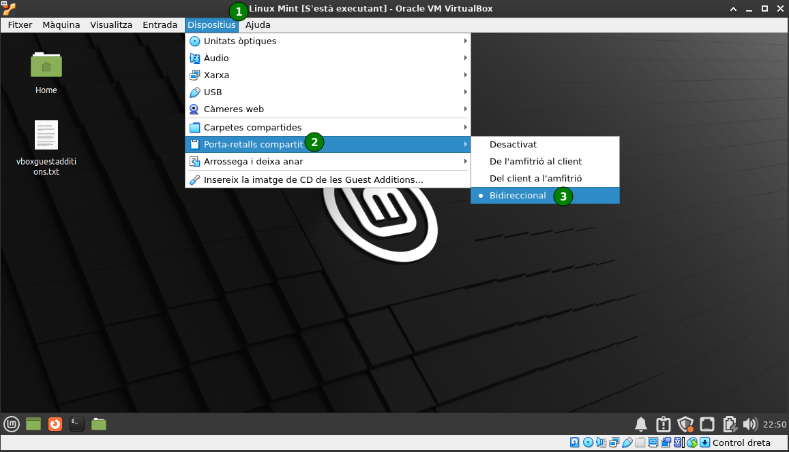

Virtual Machine Provisioning
Introduction
In this page we’re going to define the steps to create and install all the required software for the CIFO Web Application course. At the end of the process we’ll have created a fully functional environment for software development, documentation and deployment, and we’ll also have some scripts that automate the installation of the required software and dependencies in case they have to be installed again
Pre-requisites
- VirtualBox 1.6 or higher [Installation page]
- Linux Mint ISO [Download page]
- At least 60GB of free space
Virtual Machine creation
From VirtualBox, create a new virtual machine (VM) by clicking the “New” button:

Enter a unique name for the VM and select the desired architecture: 
If you add the name of the Linux distribution that you plan to install to this VM, VirtualBox will select the closest OS type and version. This is useful as VirtualBox sets initial values to RAM and disk size based on the OS to install (you can always change them later). For example, if you set Linux Mint as the VM name, the OS will be set to Linux type and Ubuntu (64-bit) version.
- Create a virtual disk by defining its path, size and type, as well as how data shall be stored in our physical hard drive 
As we’re going to install some heavy development software, it’s better to set the disk size to at least 60GB, as the OS will easily use 20GB. Also, keep the storage as dynamic; this way instead of occupying 60GB of real space from the beginning, the virtual disk will grow according to its real usage.
- Once the VM is created, mount the Linux Mint ISO file on the Secondary IDE drive as shown in the next caption 
In order to speed up things in the next steps, it’s better to change now the VM specs so it uses more CPUs and memory. Click the Parameters button in the top menu bar to do so.
- Now start the virtual machine with the
Startbutton and follow the steps to install the OS
Linux Mint installation
When initializing the VM, GRUB will greet us with some options. Select
Start Linux Mint <version> <desktop-flavour> 64-bitto launch the Live Mint version that lets you test the OS prior to installing it as well as install it onto the virtual disk Once inside the Linux Mint desktop, double-click the
Install Linux Minticon and follow the step-by-step installation process: 
Installation steps
- Language selection: It’s the system language and will be used to also configure any installed software default language
- Keyboard Layout: Select the same one as your host machine, else the keyboard inputs won’t match the inputs shown in the VM (Select
Spanish - Spanish) - Multimedia coders: Skip, unrequired for this course and can always be installed later on
- Installation type: As we’re installing the OS for the first time, just leave the default
Erase disk and install Linux Mintoption selected - Install now: Accept all changes regarding disk writing
- Where are you?: This option sets both the timezone of the VM as well as the nearest package repositories to your location that will be used
- Who are you?: Here you define your name (used in other programs as the author of mails, files, projects, etc…), the host name (VM internal name), the username and its password (the process creates a user account based on this information)
- After that, the installation process continues by installing all the required files and stock programs for that distribution and desktop manager
At this point there’s no need for any additional input from the user, so you can go grab a coffee or something else as this will take a while to complete
- Once done, just restart the machine as asked
VirtualBox additional configurations
Now VirtualBox is rendering the VM to the native resolution defined within our Linux Mint OS (guest machine). In order to dinamically change the resolution based on the window size, we must install the VirtualBox Guest Additions inside it
What does Guest Additions enable?
- Enable users to seamlessly move mouse pointer between host and guest OS.
- Allow guest OS to have read and write access to hard drives on the host OS, so you can transfer files between them.
- Power up the graphics/video ability of the guest OS. The screen resolution of guest OS can be automatically adjusted and 3D graphics can be accelerated.
- Enable bidirectional shared clipboard between host and guest OS, so you can copy and paste stuff between them.
Installation steps
On the
Devicesdrop-down menu, selectInsert Guest Additions CD imageVirtual Box prompts if we want to download the ISO file. Accept all warnings regarding this:



- Once the ISO is mounted inside the guest OS, it should try to execute the
VBoxLinuxAdditions.runfile in the ISO root; if not, open a terminal and execute
If the autoexec function didn’t launch, this doesn’t mean there’s something wrong with your guest OS; it might mean that it has this feature disabled by default. Check your Desktop manager options.
The mount path of the Guest Additions ISO may be different depending on the username and the ISO version, so you might have to change it.
The output should be like this:
cifo-web@cifoweb-VirtualBox:/media/cifo-web/VBox_GAs_6.1.40$ sudo ./VBoxLinuxAdditions.run
Verifying archive integrity... All good.
Uncompressing VirtualBox 6.1.40 Guest Additions for Linux........
VirtualBox Guest Additions installer
Copying additional installer modules ...
Installing additional modules ...
VirtualBox Guest Additions: Starting.
VirtualBox Guest Additions: Setting up modules
VirtualBox Guest Additions: Building the VirtualBox Guest Additions kernel
modules. This may take a while.
VirtualBox Guest Additions: To build modules for other installed kernels, run
VirtualBox Guest Additions: /sbin/rcvboxadd quicksetup <version>
VirtualBox Guest Additions: or
VirtualBox Guest Additions: /sbin/rcvboxadd quicksetup all
VirtualBox Guest Additions: Building the modules for kernel 5.15.0-41-generic.
update-initramfs: Generating /boot/initrd.img-5.15.0-41-generic
VirtualBox Guest Additions: Running kernel modules will not be replaced until
the system is restarted- Restart your guest OS
See this video if you have any more doubts regarding Guest Additions in Linux Mint:
Guest Additions configurations
Enable fluid window
Fluid mode is automatically enabled after the guest OS restart. If not, you can always enable it with the shortcut Right Ctrl + L.
Enable bidirectional clipboard
Make sure the clipboard is set to bidirectional; after that, copy-paste commands should work between Host and Guest machines. 